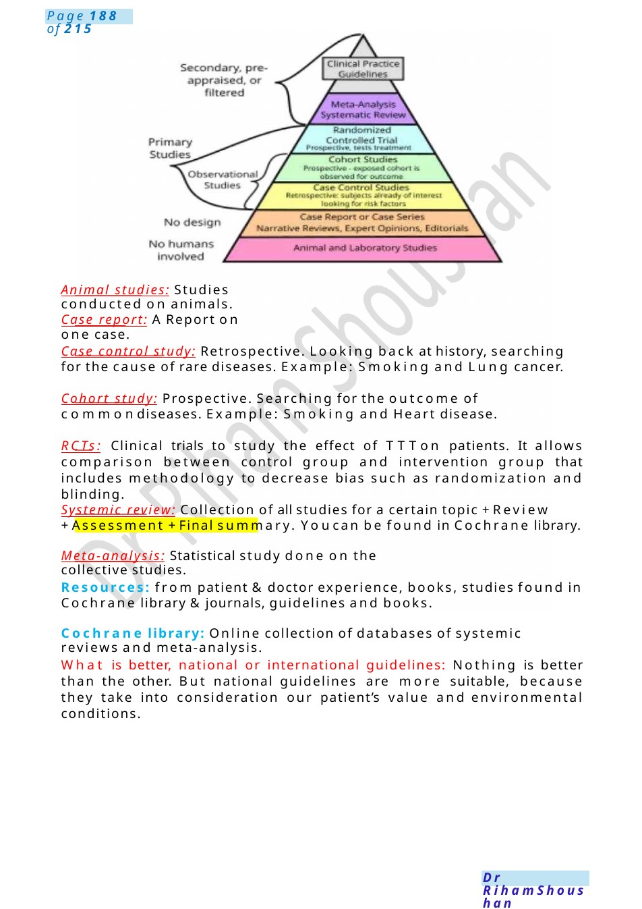

EBM
Definition: EBM is practicing medicine based on evidence to improve the quality of healthcare we are providing to the patients. It is the integration of 3 circles: Best Available Evidence. Clinical judgment. Patient values.
Scenario Summary
Definition: EBM is practicing medicine based on evidence to improve the quality of healthcare we are providing to the patients. It is the integration of 3 circles: Best Available Evidence. Clinical judgment. Patient values.
Full Original Scenario

EBM
draw the 3 circles &pyramid of studies
Definition: EBM is practicing medicine based on evidence to improve the quality of healthcare we are providing to the patients. It is the integration of
3 circles: Best Available Evidence. Clinical judgment. Patient values.
Stages: 5 stages of EBM: Ask a question. Acquire best evidence. Appraise evidence. Apply evidence. Assess performance.
1st stage: Ask a question for the problem [PICO] Problem of patient, Intervention, Comparison & Outcome.
2nd stage: Acquire information from the pyramid of studies, where studies arranged by its strength. At the bottom, the weakest studies. At the top, the strongest studies.
3rd stage: Appraise the evidence by seeing if applicable and suitable research for our patient.
4th stage: Apply the evidence. By seeing what’s the priority, patient’s preference and our clinical experience.
5th stage: Assess your performance by evaluating all above stages and formulate an action plan for best care of our patient.

Animal studies: Studies conducted on animals.
Case report: AReport on one case.
Case control study: Retrospective. Looking back at history, searching for the cause of rare diseases. Example: Smoking and Lung cancer.
Cohort study: Prospective. Searching for the outcome of commondiseases. Example: Smoking and Heart disease.
RCTs: Clinical trials to study the effect of TTTon patients. It allows comparison between control group and intervention group that includes methodology to decrease bias such as randomization and blinding.
Systemic review: Collection of all studies for a certain topic +Review +Assessment +Final summary. Youcan be found in Cochrane library.
Meta-analysis: Statistical study done on the collective studies.
Resources: from patient &doctor experience, books, studies found in Cochrane library &journals, guidelines and books.
Cochrane library: Online collection of databases of systemic reviews and meta-analysis.
What is better, national or international guidelines: Nothing is better than the other. But national guidelines are more suitable, because they take into consideration our patient’s value and environmental conditions.

Quality Improvement
DrawPDSAcycle
Communication Task: Explaining Quality Improvement to a Junior Doctor
Scenario:
Youare a senior doctor in the hospital. Ajunior doctor has just started working in the department and has heard about Quality Improvement (QI) but is not sure what it means or how to apply it in daily practice. The junior doctor asks you to explain it.
Introduction
Senior Doctor:
“Quality Improvement, or QI, is a structured approach used in healthcare to improve patient care, safety, and clinical outcomes. It focuses on identifying problems in the healthcare system and making small, measurable changes to improve howcare is delivered.”